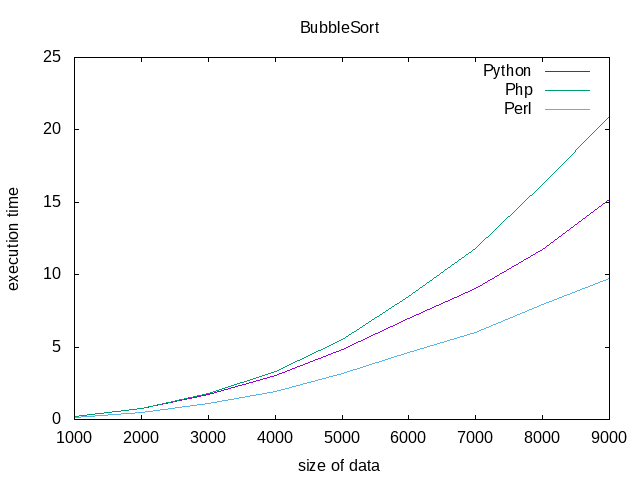

My work
Most of my work is in my Github. But here are some examples of what I've done.

Web Languages Benchmark
This is a benchmark to compare Python, PHP and Perl in your web server. The script compares different functions. You can check it out here
SendTweet

Simple terminal script to interact with Twitter. You can see your timeline and also send a tweet. Check it out here
Where To Find Me?
You can check my Twitter account that is www.twitter.com/pacocp9

You can check my Github account that is www.github.com/pacocp

You can contact me by my email account: carrilloperezfrancisco@gmail.com